Детская онлайн-школа Joki Joya
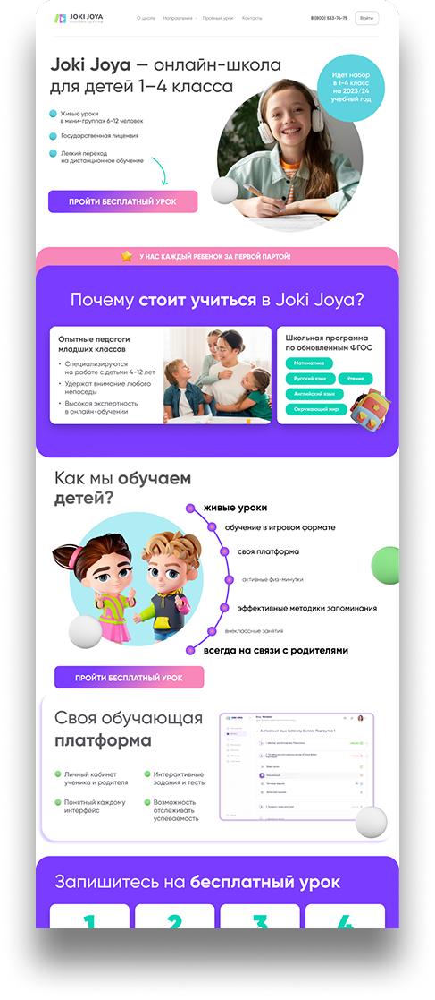
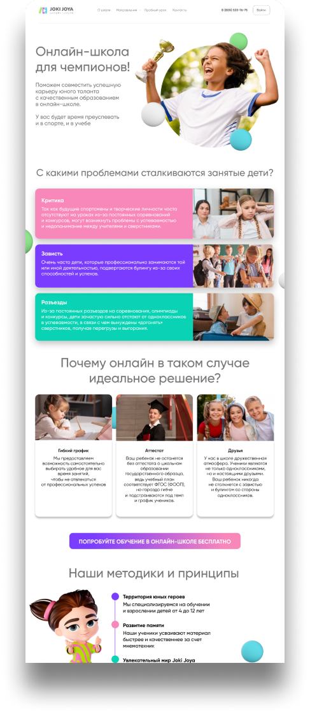
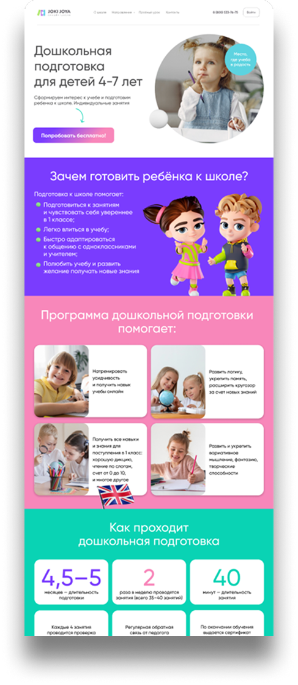
Проблема
Интерфейс сайта отпугивал потенциальных клиентов. Он был успешен среди узкого круга пользователей, уже знакомых со школой, но масштабировать такой продукт — сложно.
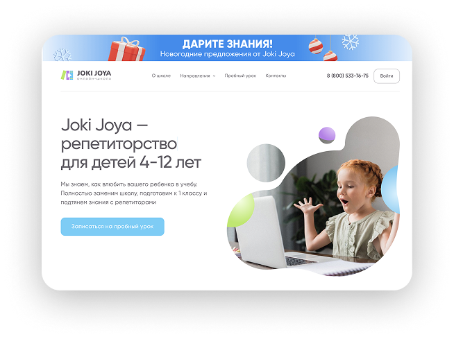
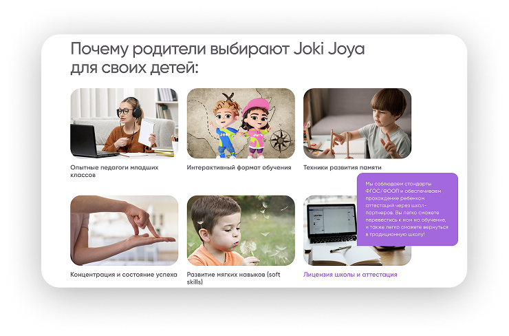
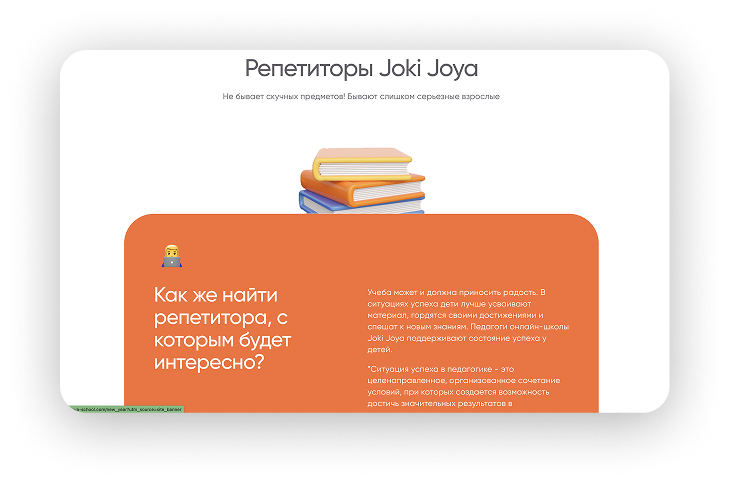
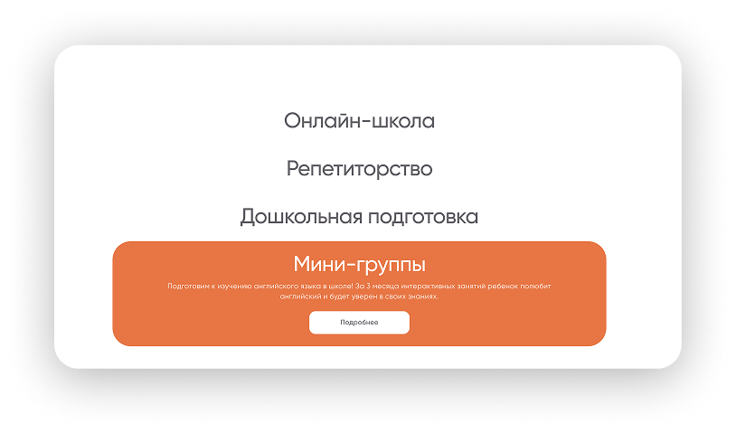
Заказчик не знал что он хочет увидеть. Была лишь фраза: «Сделай красиво и для детей, и для родителей»
Сфера не молодая. Казалось что у конкурентов есть уже все визуальные решения
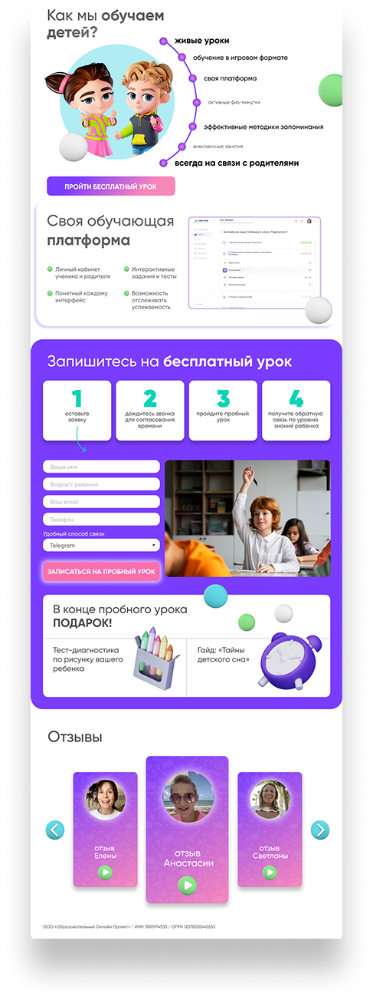
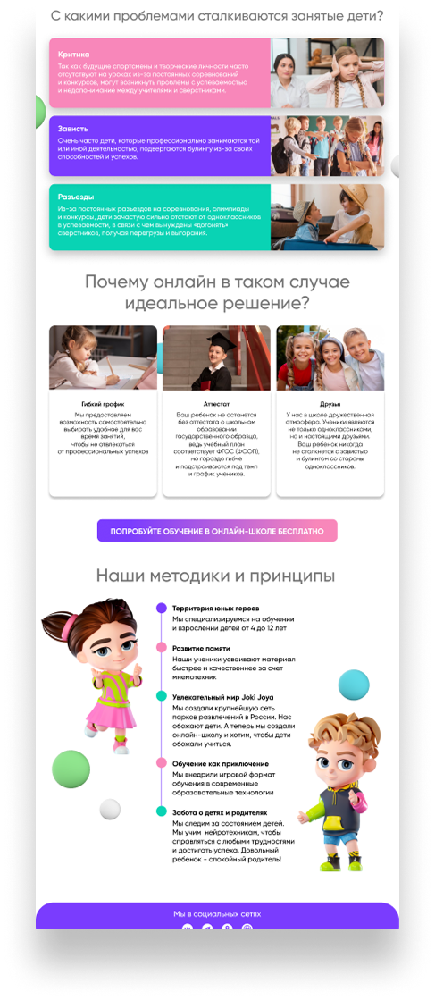
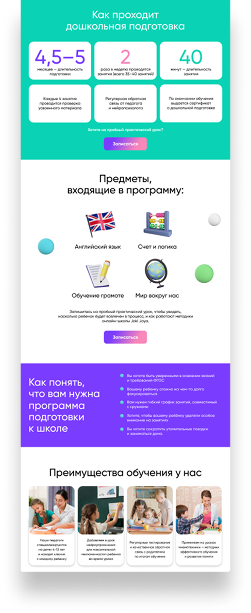
Так же сложность заключалась в том, что у компании было слишком много продуктов (онлайн-школа, репетиторы, дошкольная подготовка, курсы, мерч, настольные игры и прочее) которые нужно было отобразить на сайте.
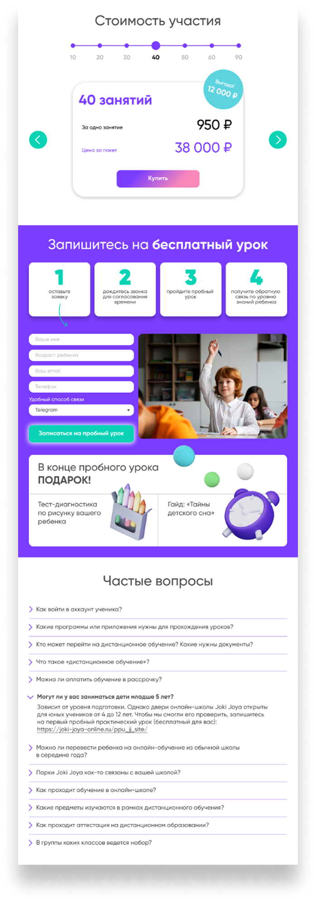
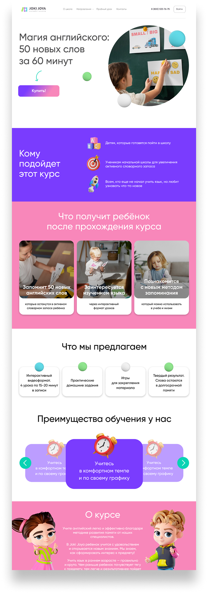
Итоги за год:
- сделали 54 страницы сайта + 6 тематических акционных лендингов
- количество лидов возросло в два раза
- количество выручки увеличилось в 3 раза
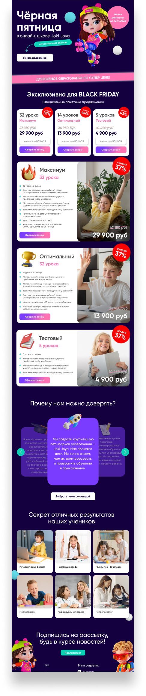
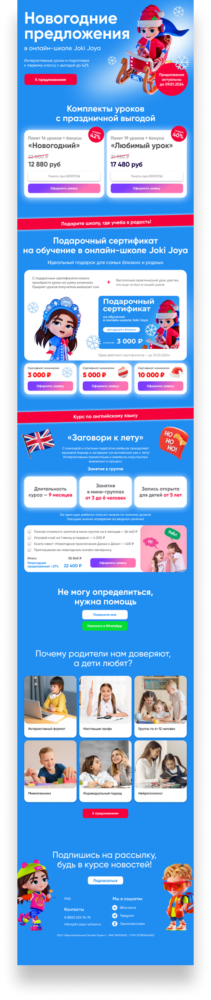
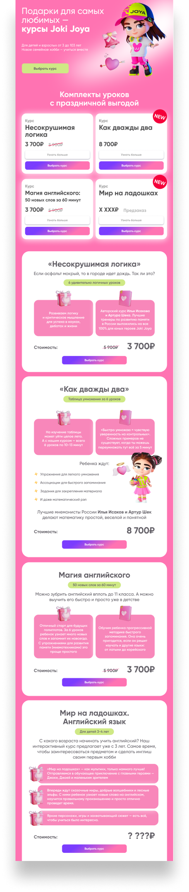
Приложение вертикальных видео Yappy
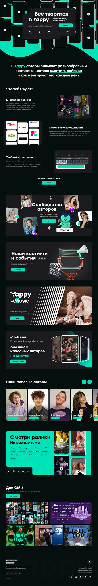
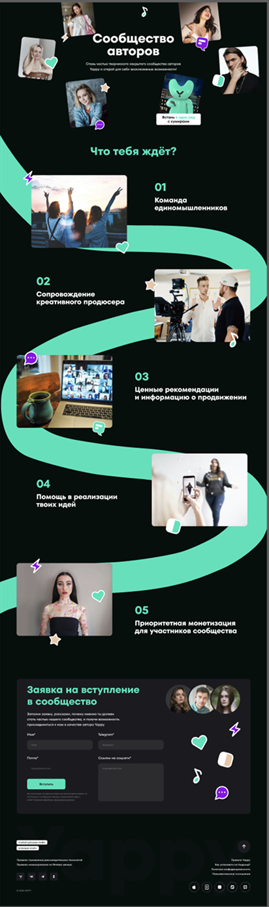
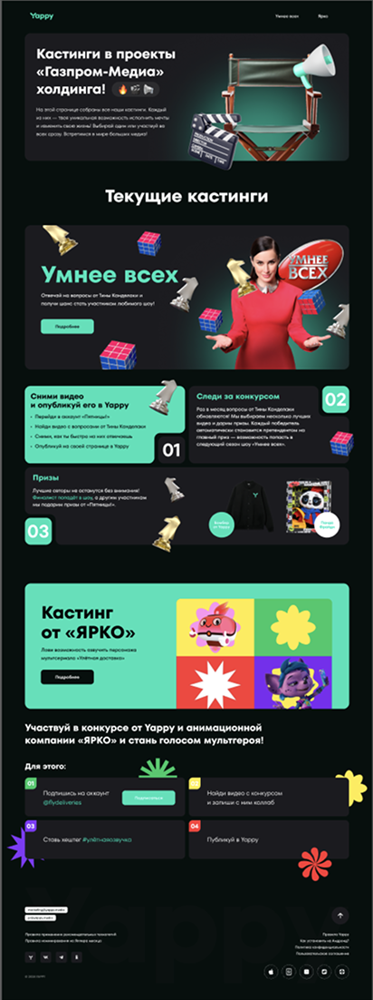